Jel, AGM ve Stasyoner Aküler
Servis ve marş grupları için bakım gerektirmeyen aküler.
Ürünlerimiz
Enerji, dağıtım, seyir ve konfor ekipmanları. Ürün seçimi, montajı ve devreye alınması bizden.
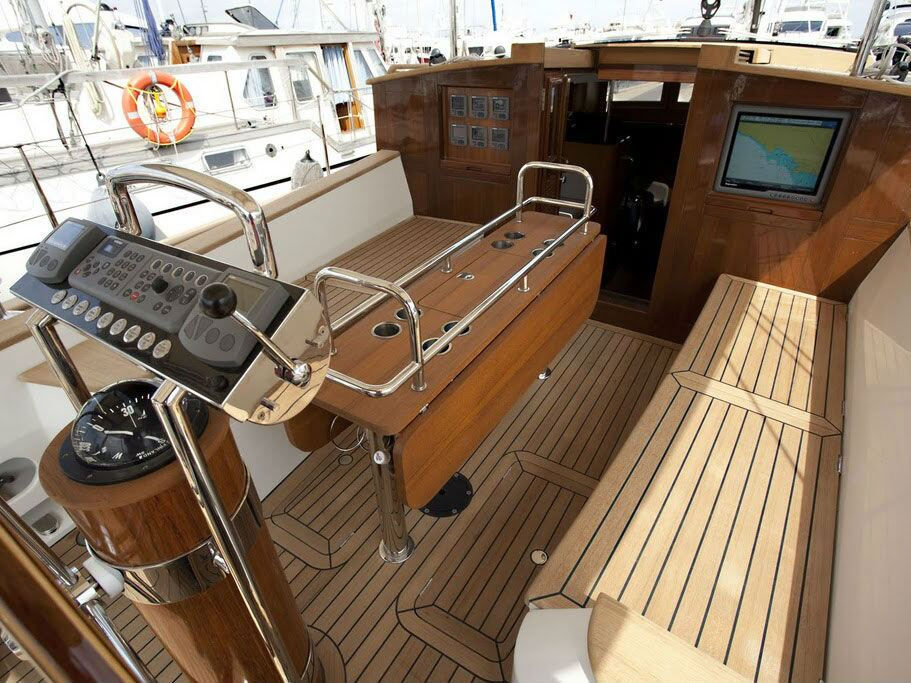
Teknenin enerji kaynağı aküler, şarj cihazları ve invertörlerdir. Servis ve marş akü gruplarını sahil elektriği ve jeneratörle birlikte çalışacak şekilde kurguluyoruz.
Servis ve marş grupları için bakım gerektirmeyen aküler.
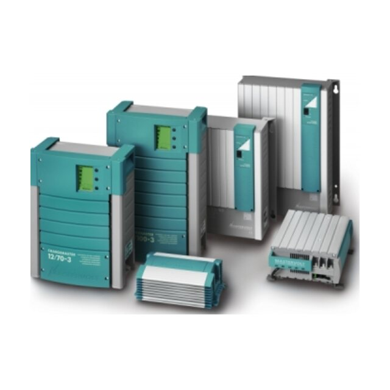
Sahil elektriği veya jeneratörden akü şarjı.
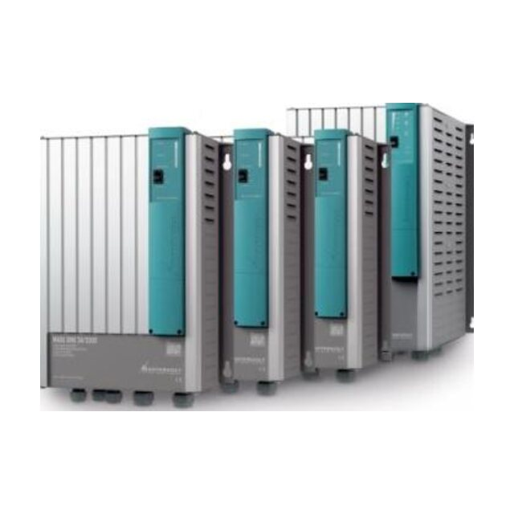
Akü gücünü 230V AC'ye çeviren invertörler.
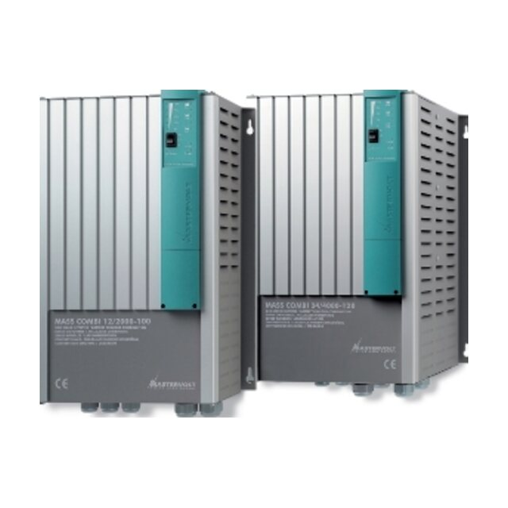
Akü şarj cihazı ve invertör tek ünitede.
Devreleri koruyan sigortalar, akü gruplarını yöneten şalterler ve panolarda kullanılan anahtarlar.

Akü gruplarını devreye alan ve ayıran ana şalterler.
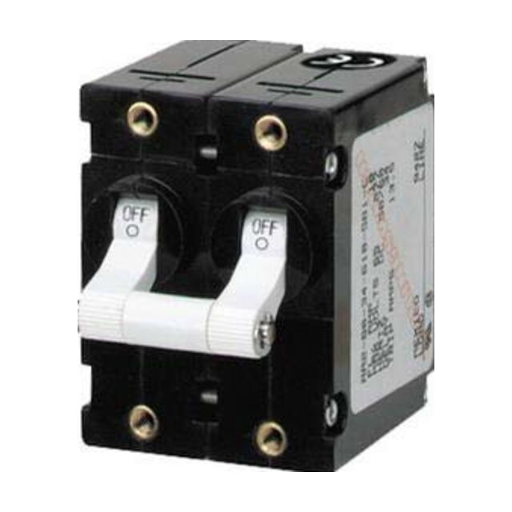
230V AC devreler için otomatik sigortalar.
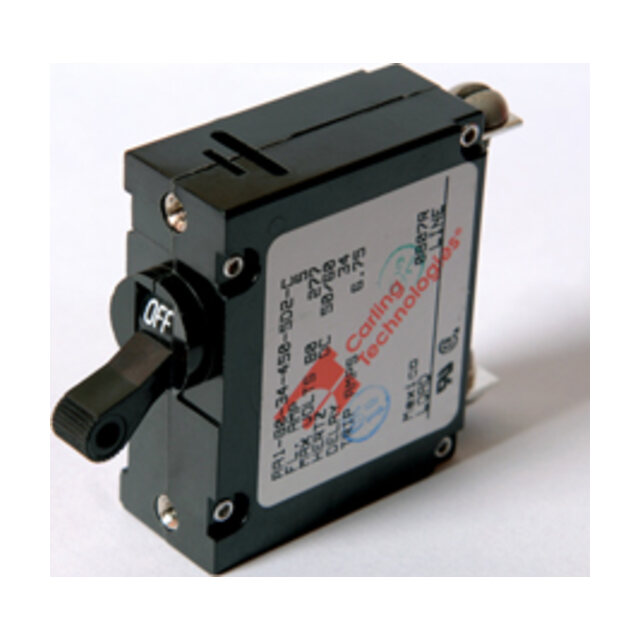
12/24V DC devreler için marin tip otomatik sigortalar.
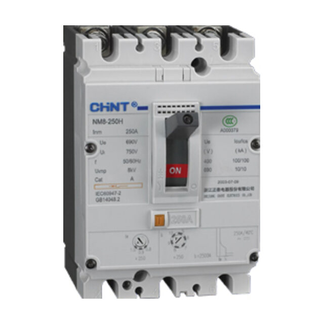
Dağıtım panoları için kompakt şalterler.
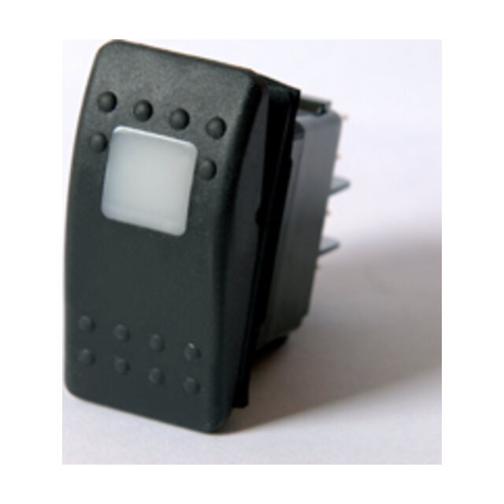
Pano ve konsollar için marin tip, ışıklı anahtarlar.
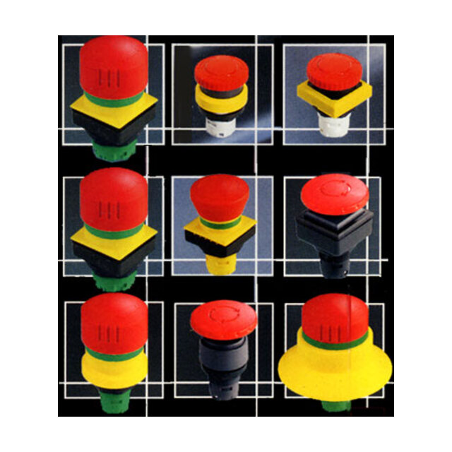
Motor ve sistemler için acil durdurma butonları.
Seyir güvenliği ve manevra için fenerler, projektörler, dümen göstergeleri ve baş pervaneleri.

Farklı tekne boylarına uygun seyir fenerleri.
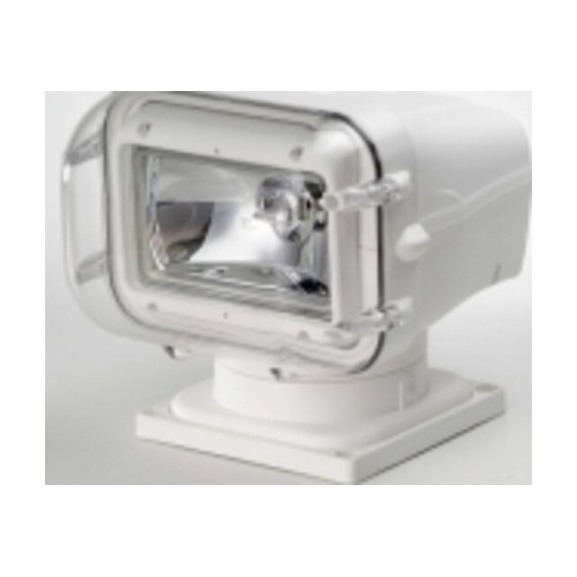
Kaptan köşkünden yönetilen arama projektörleri.
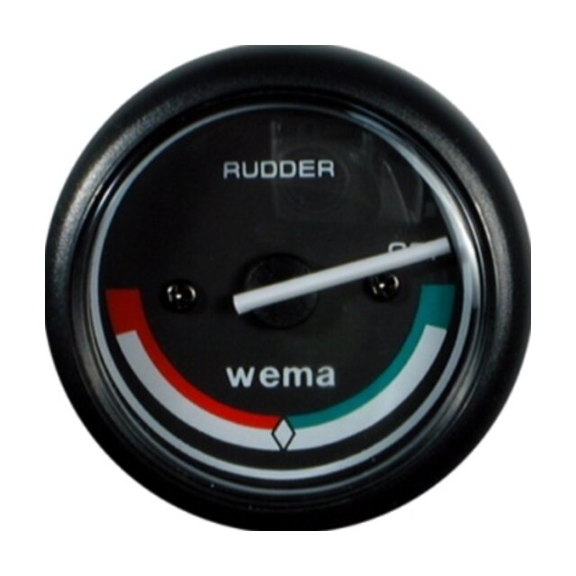
Dümen konumunu kaptan köşküne ileten gösterge ve sensörler.
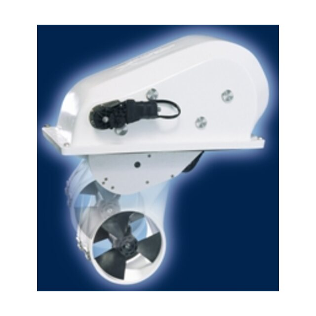
Kullanılmadığında gövde içine çekilen baş pervaneleri.
Uzun seyirlerde hayatı kolaylaştıran uydu, su yapıcı ve iklimlendirme sistemleri.

Seyir halinde uydu TV ve iletişim için stabilize antenler.
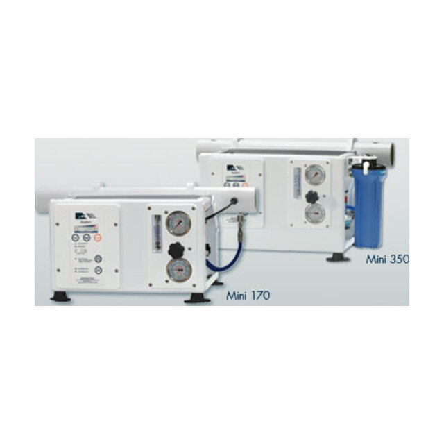
Deniz suyundan tatlı su üreten ters ozmoz sistemleri.
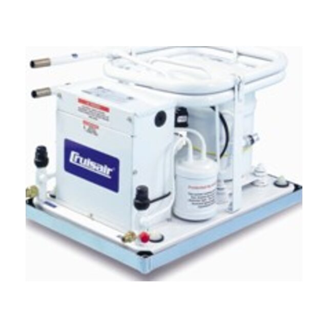
Tekne içi iklimlendirme için marin klimalar.
Mastervolt, Intellian, Marine Air Systems, Cruisair ve Horizon Reverse Osmosis gibi iş ortaklarımızın ürünlerini teknenizin sistemine uygun şekilde öneriyor, montajını ve servisini yapıyoruz.
Yeni bir proje, bir yenileme ya da bir arıza: ilk görüşmeyi telefonda yapalım.